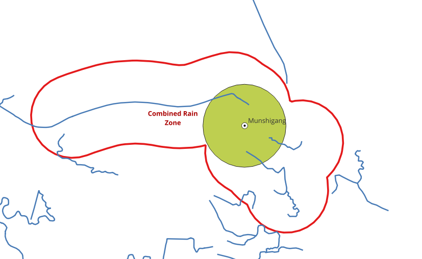
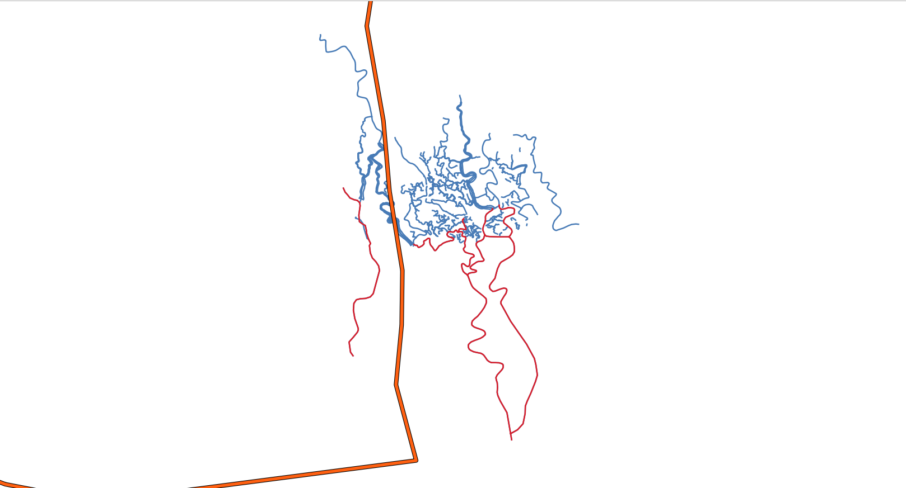

4. 住み続けられるまちづくりを¶
Sustainable Cities and Communities は11番目の持続可能な開発目標であり、都市を inclusive, safe, resilient かつ sustainable にすることを目指しています。世界の都市化は進み続けています。2007年以降、世界人口の半数以上が都市に住んでいます。そのため、洪水のような災害が起こりうるときに、都市が警戒を怠らないことがきわめて重要になります。地方行政は、近隣で降った雨によって自分たちの都市が影響を受けるかどうかを把握し、市民に警報を出せるようにしておく必要があります。この演習では、そうした課題の1つを解決します。
4.1. 課題: 都市が雨の影響を受けるかどうか¶
課題の説明
雨が降ると都市や町に影響を与えるエリアを特定します
{kind=link}

中心となる考え方
都市につながる河川の近くで雨が降ると、その都市は雨の影響を受けます。
進め方
都市を選ぶ
河川 (エッジ) を取得する
河川の連結成分を作成する
都市の周囲にバッファを作成する
バッファと交差する連結成分を求める
降雨ゾーンを求める
4.2. 都市を選ぶ¶
この演習では、バングラデシュの Munshigang 市を選びます。この都市は近隣に複数の河川があり、この演習を示すのに適した場所です。この演習では、雨が降ると都市が影響を受けるエリアを求めます。この都市の位置を定義して以降の手順で使うために、都市の名前と緯度経度の値を格納するテーブルを作成します。これにより、都市は点として格納されます。
4.2.1. 演習 1: 都市の点を作成する¶
都市用のテーブルを作成します
CREATE TABLE bangladesh (
id BIGINT,
name TEXT,
geom geometry,
city_buffer geometry
);
CREATE TABLE
Munshigang を挿入します
INSERT INTO bangladesh(id, name, geom) VALUES
(5, 'Munshigang', ST_SetSRID(ST_Point(89.1967, 22.2675), 4326));
INSERT 0 1
バッファで都市の領域を模擬します
UPDATE bangladesh
SET city_buffer = ST_Buffer((geom),0.005)
WHERE name = 'Munshigang';
UPDATE 1
テーブルの定義を確認します
\dS+ bangladesh
Table "public.bangladesh"
Column | Type | Collation | Nullable | Default | Storage | Compression | Stats target | Description
-------------+----------+-----------+----------+---------+----------+-------------+--------------+-------------
id | bigint | | | | plain | | |
name | text | | | | extended | | |
geom | geometry | | | | main | | |
city_buffer | geometry | | | | main | | |
Access method: heap
緯度と経度の値は、指定した X 座標と Y 座標を持つ点を返す ST_Point を使って geometry 形式に変換されます。ST_SetSRID は、ポイントジオメトリの SRID (空間参照識別子) を 4326 に設定するために使用します。
4.3. データベースを準備する¶
持続可能な開発目標のためのデータ で取得したデータを使用します。
この節では、クエリを処理したときに同じ結果が得られるよう、データベースの状態を確認します。
4.3.1. 演習 2: 検索パスを設定する¶
前処理の最初の手順は、Waterways のデータ用に検索パスを設定することです。検索パスは、特定のテーブルをどのようにインポートするかをシステムが判断するのに役立つスキーマの一覧です。
SET search_path TO waterways,public;
SHOW search_path;
SET
search_path
-------------------
waterways, public
(1 row)
4.3.2. 演習 3: データベースの構成を確認する¶
すべてのプロジェクト作業の一環として、データベースの構造を調べます。
インストールされている拡張機能を取得します
\dx
List of installed extensions
Name | Version | Schema | Description
-----------+---------+------------+------------------------------------------------------------
hstore | 1.8 | public | data type for storing sets of (key, value) pairs
pgrouting | 4.0.1 | public | pgRouting Extension
plpgsql | 1.0 | pg_catalog | PL/pgSQL procedural language
postgis | 3.6.4 | public | PostGIS geometry and geography spatial types and functions
(4 rows)
インストールされているテーブルを一覧表示します
\dt
List of relations
Schema | Name | Type | Owner
-----------+-------------------+-------+--------
public | bangladesh | table | runner
public | spatial_ref_sys | table | runner
waterways | configuration | table | user
waterways | pointsofinterest | table | user
waterways | ways | table | user
waterways | ways_vertices_pgr | table | user
(6 rows)
4.3.2.1. 演習 4: 水路の数を数える¶
このワークショップで情報の件数を数えるのは、同じデータが使われ、その結果として同じ結果が得られることを確認するためです。また、いくつかの行を見ることで、テーブルの構造とデータの格納方法を理解できます。
SELECT count(*) FROM ways;
count
-------
815
(1 row)
4.4. 水路データの処理¶
この節では、処理に使用するグラフを扱います。グラフを構築する際には、無効なデータがないかを判断するためにデータを調べる必要があります。これは、データが必要な品質を満たしていることを確認するためのきわめて重要な手順です。pgRouting はデータの調整にも使用できます。
4.4.1. 演習 5: 課題に関係しない水路を除去する¶

この演習では、雨が降ると都市が影響を受ける本土のエリアだけを対象とします。したがって、都市より標高の低い湿地帯にある河川は、waterways.ways テーブルから除去します。
湿地の河川を除去します
DELETE FROM ways
WHERE osm_id
IN (721133202, 908102930, 749173392, 652172284, 126774195, 720395312);
DELETE 31
注釈
多数の都市を扱う場合は、ビューを作成するほうがよい方法かもしれません。
水路としてタグ付けされた境界も削除します
DELETE FROM ways WHERE osm_id = 815893446;
DELETE 1
注釈
OSM のウェブサイトで元データを修正するほうが、よりよい方法かもしれません。
4.5. 演習 6: 水路の連結成分を取得する¶
データ中の河川は単一のエッジではなく、複数のエッジで1本の河川が構成されているため、つながったエッジを見つけて、その情報を waterways.ways テーブルに格納することが重要です。これにより、どのエッジがどの河川に属するかを識別できます。まず連結成分を求め、component という名前の新しい列に格納します。
この作業には pgRouting の pgr_connectedComponents 関数を使用します。詳しくは グラフ で説明しています。
すべての連結成分を求めるサブクエリを作成します。その後、サブクエリで得られた結果を使って component 列を更新します。これにより、waterways.waterway_vertices テーブルに連結成分の id が格納されます。次のクエリではこの出力を使い、waterways.ways (エッジ) テーブルに連結成分の id を格納します。この作業を完了するには、以下の手順に従ってください。
頂点テーブルを作成します。
SELECT * INTO waterways.waterways_vertices
FROM pgr_extractVertices(
'SELECT id, source, target
FROM waterways.ways ORDER BY id');
SELECT 777
x, y, geom の各列を埋めます。
UPDATE waterways_vertices v SET geom = ST_startPoint(w.geom)
FROM ways w WHERE source = v.id;
UPDATE waterways_vertices v SET geom = ST_endPoint(w.geom)
FROM ways w WHERE v.geom IS NULL AND target = v.id;
UPDATE waterways_vertices set (x,y) = (ST_X(geom), ST_Y(geom));
UPDATE 656
UPDATE 121
UPDATE 777
エッジテーブルと頂点テーブルに component 列を追加します。
ALTER TABLE ways ADD COLUMN component BIGINT;
ALTER TABLE waterways_vertices ADD COLUMN component BIGINT;
ALTER TABLE
ALTER TABLE
頂点テーブルの component 列を埋めます。
UPDATE waterways_vertices SET component = c.component
FROM (
SELECT * FROM pgr_connectedComponents(
'SELECT id, source, target, cost, reverse_cost FROM ways')
) AS c
WHERE id = node;
UPDATE 777
エッジテーブルの component 列を埋めます。
UPDATE ways SET component = v.component
FROM (SELECT id, component FROM waterways_vertices) AS v
WHERE source = v.id;
4.5.1. 演習 7: 都市のバッファを取得する関数を作成する¶
同じ作業を関数にすることもできます。これは、テーブルに複数の都市がある場合に役立ちます。
CREATE OR REPLACE FUNCTION get_city_buffer(city_id INTEGER)
RETURNS geometry AS
$BODY$
SELECT city_buffer FROM bangladesh WHERE id = city_id;
$BODY$
LANGUAGE SQL;
CREATE FUNCTION
4.6. 演習 8: バッファと交差する連結成分を求める¶
次の手順では、都市のバッファゾーン内にある水路の連結成分を求めます。これらは、周辺で雨が降ったときに都市に影響を与える水路です。これには ST_Intersects を使用します。下のクエリでは get_city_buffer 関数を使用している点に注意してください。
1SELECT DISTINCT component
2FROM bangladesh JOIN waterways.ways w
3ON (ST_Intersects(w.geom, get_city_buffer(5)));
component
-----------
8
57
62
(3 rows)
出力には、都市のバッファゾーン内にある連結成分の番号が重複なく表示されます。つまり、都市の範囲内にある河川です。
4.7. 演習 9: 降雨ゾーンを取得する¶
この演習では、雨が降ると都市が影響を受けるエリアを計算します。このエリアを演習では rain zone と呼びます
河川の連結成分の周囲にバッファを作成します。
waterways.ways に
rain_zoneという名前の列を追加します降雨ゾーンのバッファジオメトリを格納するためです。
ST_Bufferを使って、都市のバッファエリアと交差するすべてのエッジのバッファを求め、rain_zone列を更新します。
バッファジオメトリを格納する列を追加します
ALTER TABLE ways
ADD COLUMN rain_zone geometry;
ALTER TABLE
バッファジオメトリを格納します
UPDATE waterways.ways
SET rain_zone = ST_Buffer((geom),0.005)
WHERE ST_Intersects(geom, get_city_buffer(5));
UPDATE 5
これにより、雨が降ると都市が影響を受ける、必要なエリアが得られます。
4.8. 演習 10: 降雨ゾーンを結合する¶
得られた複数のポリゴンは ST_Union を使って結合することもできます。これにより、出力として単一のポリゴンが得られます。
近隣で雨が降ると、都市はその雨の影響を受けます。
-- Combining mutliple rain zones
SELECT ST_Union(rain_zone) AS Combined_Rain_Zone
FROM ways;
combined_rain_zone
--------------------------------------------------------------------------------------------------------------------------------------------------------------------------------------------------------------------------------------------------------------------------------------------------------------------------------------------------------------------------------------------------------------------------------------------------------------------------------------------------------------------------------------------------------------------------------------------------------------------------------------------------------------------------------------------------------------------------------------------------------------------------------------------------------------------------------------------------------------------------------------------------------------------------------------------------------------------------------------------------------------------------------------------------------------------------------------------------------------------------------------------------------------------------------------------------------------------------------------------------------------------------------------------------------------------------------------------------------------------------------------------------------------------------------------------------------------------------------------------------------------------------------------------------------------------------------------------------------------------------------------------------------------------------------------------------------------------------------------------------------------------------------------------------------------------------------------------------------------------------------------------------------------------------------------------------------------------------------------------------------------------------------------------------------------------------------------------------------------------------------------------------------------------------------------------------------------------------------------------------------------------------------------------------------------------------------------------------------------------------------------------------------------------------------------------------------------------------------------------------------------------------------------------------------------------------------------------------------------------------------------------------------------------------------------------------------------------------------------------------------------------------------------------------------------------------------------------------------------------------------------------------------------------------------------------------------------------------------------------------------------------------------------------------------------------------------------------------------------------------------------------------------------------------------------------------------------------------------------------------------------------------------------------------------------------------------------------------------------------------------------------------------------------------------------------------------------------------------------------------------------------------------------------------------------------------------------------------------------------------------------------------------------------------------------------------------------------------------------------------------------------------------------------------------------------------------------------------------------------------------------------------------------------------------------------------------------------------------------------------------------------------------------------------------------------------------------------------------------------------------------------------------------------
0103000020E6100000010000007C0000005DC25946634C56408ABF87BDBD423640C1A237A6584C5640303DDDE7ED423640249BBB93504C56408102F66F25433640F39C4F5E4B4C56401601813362433640BDC63139494C56409AC7B3DCA1433640FB447C394A4C5640E98843F9E14336400968C5394A4C564015E594FDE14336405F1DD849404C56403A5577EED7433640ACA22AF92F4C564083775044CE433640D1D14BCE164C5640F1C9219DC94336400CF50F290A4C56405E7E1330CB433640F3418FC4F44B5640AC581E80D4433640E509D39DEE4B5640C765B120D8433640CA514196DF4B56404EC10A56E3433640066B34B9D04B5640610AF3DFEA4336402FC1DF4DC54B564085CAD719ED433640C9591B3ABF4B5640F1E5EA48EE43364011DAB3B9AA4B56401E9B1316E9433640BE268DB4A24B564099AAB1BFE4433640AC3A89729B4B564051CAA489DE433640C9676CB4874B5640BA0527F0C74336401D40D2D86E4B5640F5AA9FCDA743364014C5557C604B564048EB3A3E924336401B7C4CF8504B56404624C5AC814336407E94B7F1404B5640EA8B6E887D43364041FE3F06314B56408EACF6F9854336402BE983D2214B564021834CAE9A433640B4F811EC134B564006B3BFD9BA43364084EEA9DB074B5640F666D43FE54336405A56FB17FE4A5640FADC6C3F18443640ABE61501F74A564095F6D0E251443640EB74B8DCF24A5640761AF6F28F443640D4CEA2D3F14A5640EBB8490DD0443640FDD604F0F34A5640DF1128BB0F453640A24C1A1DF94A56403866188A4C4536409B18F727014B56401328E0238445364097457CC10B4B5640D4508065B445364018636281184B56407BB13A74DB4536407E693BEA264B56403670D0CFF7453640343BE10E374B56402A58070C104636405459A9A63A4B56400C80311015463640C281CAA3564B5640BDF1E43E3946364078E51B4B594B564073FD897A3C463640F5CA020C714B5640D1EB67AB57463640B85E8172764B564048DC8A105D463640A6DC2B7D834B56407ECAB339684636407F5FBFA6894B564018D4AA856C463640EFA1E0A8974B5640430C1D19744636402951FB739D4B5640218571657646364062D98771B94B56406B7A6A7E7D4636409400739CC24B5640490E28C37D463640358E8546CD4B5640AF9751AF7B463640752D47DEDB4B564073A90BD7784636405D4B742FE24B5640717C28A0764636403B00E98FF64B5640BE24644A6C463640E5FE8A45FB4B56405FEEBE57694636408B333996094C56408A85C9AA5E46364028093C94154C56408EFB5772594636402DD4F420204C5640FED3A9655B463640F01C7BFF234C564029EF54505F46364060D541A42D4C5640C6ACEE726B46364038A83343404C5640D1063783864636407C91432C444C564062D10EC18B463640F1E3EC4F554C5640B6CDEED2A046364056D33CEC574C564026C237D8A34636406B23E593674C56403BC78CD6B4463640CB6FC0B6784C5640ECFC01D2BF46364068083B0B8A4C5640D239E01DBC4636401329E60B8E4C5640D902888AB9463640EE58623E9D4C5640D0F651A9A9463640D6996367AB4C56403533C3788E463640A35FA501B84C56406FA6C0F868463640B115469BB94C5640CDE9CF2D63463640FEDD7DE9BA4C564001298A6D60463640D2EE2B65BF4C56406C47E19954463640060C5C59C34C56408751C0984B463640FECDFD33CD4C564065D752343146364061FA2B1DD14C56404EEE67002546364042FC43BFDC4C5640A8D0CEB7F8453640379138FFE54C56402FDB0C35C4453640CFED0982EC4C5640AC0CBB7C89453640D205AA07F04C5640366688D04A453640B3F8C816F04C564075054D4641453640ADC20E1FF44C564009C0211D39453640A1783163FA4C564095CBB6B83F453640EE5D946A0A4D5640BF8101AA43453640DEA158541A4D564016D8C7053B45364054CFF083294D5640D3890D21264536401EFEF663374D56408C085FC905453640C097EA6B434D56409B4FEB3CDB4436401B3E6F254D4D5640349F491EA84436407C38D930544D56407C6A63646E443640A5A7DA48584D5640FDB920473044364030552D45594D5640C7249529F0433640C5EA1E1C574D564007158482B0433640F0E231EB554D56409B1855719C4336406FB56626504D56408BED70085B433640B04D9011474D56409DC508F21F4336408DDF41EC434D56409FE8DCA30F4336403A7F09153B4D5640A3D8D3B8E84236404163826B394D564059E12B6DE3423640223BE9713A4D56404CCC6847CE42364076D4BABE3B4D56404370292C794236402F6D104D3B4D5640142EC2A35F4236409B072C9F384D5640DB07B14D20423640453BA8E7324D5640C2BF6A46E441364073FFC25E2A4D5640EB9A7DDCAD413640F33073581F4D564031543B277F413640FF882E41124D564052AC26F259413640D197BE99034D5640B5C64AAB3F4136402DC44DF2F34C5640910C2A55314136408E00DDE4E34C5640E7F9CE7C2F41364000B7580FD44C5640389060343A413640F924870DC54C564091C16F1251413640C4DB0B73B74C5640D7B0043673413640154ABBC5AB4C5640D6EA434F9F4136401D207678A24C5640A98A56ACD341364030D41C0D9C4C56406499C0F30C423640F5D774EB904C564041E0C04F29423640F15AF7E28B4C5640153E3F9C39423640E251EE19814C5640FFDB62A963423640323E840C7D4C5640CECF25AB764236405F7A990B704C56403494CECA964236405DC25946634C56408ABF87BDBD423640
(1 row)